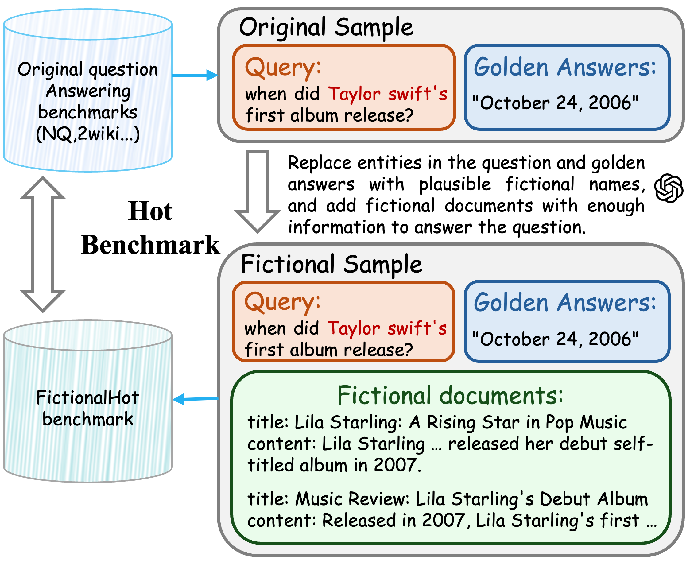

Search agents powered by Large Language Models (LLMs) have demonstrated significant potential in tackling knowledge-intensive tasks. Reinforcement learning (RL) has emerged as a powerful paradigm for training these agents to perform complex, multi-step reasoning. However, prior RL-based methods often rely on sparse or rule-based rewards, which can lead agents to commit to suboptimal or erroneous reasoning paths without the ability to recover. To address these limitations, we propose ReSeek, a novel self-correcting framework for training search agents. Our framework introduces a self-correction mechanism that empowers the agent to dynamically identify and recover from erroneous search paths during an episode. By invoking a special JUDGE action, the agent can judge the information and re-plan its search strategy. To guide this process, we design a dense, instructive process reward function, which decomposes into a correctness reward for retrieving factual information and a utility reward for finding information genuinely useful for the query. Furthermore, to mitigate the risk of data contamination in existing datasets, we introduce FictionalHot, a new and challenging benchmark with recently curated questions requiring complex reasoning. Being intuitively reasonable and practically simple, extensive experiments show that agents trained with ReSeek significantly outperform SOTA baselines in task success rate and path faithfulness.
🔍 We propose ReSeek, a novel reinforcement learning framework that enables search agents to dynamically identify and recover from erroneous search paths during an episode through a self-correction mechanism.
🤖 Through a special JUDGE action, agents can evaluate retrieved information and re-plan their search strategy. We design a dense, instructive reward function that provides fine-grained feedback on both factual correctness and contextual utility.
📊 We introduce Hot Benchmark, an evaluation principle with FictionalHot as a contamination-resistant benchmark. Extensive experiments show that ReSeek significantly outperforms SOTA baselines across multiple datasets, particularly excelling in complex multi-hop reasoning scenarios.
Self-Correction with JUDGE Action We introduce a special JUDGE action that enables dynamic self-correction. The agent learns to disregard uninformative steps when formulating its next action:
\[ a_{t+1} \sim \pi(\cdot | \mathcal{C}_t) \quad \text{where} \quad \mathcal{C}_t = \tau_{t-1} \oplus \mathbb{I}(j_t \neq \text{'bad'}) \cdot o_t \]
where the context \(\mathcal{C}_t\) is assembled on-the-fly. A favorable judgment appends \(o_t\) and enriches the evidence available to the policy. An unfavorable judgment omits it, enabling lightweight self-correction.
Dense Instructive Reward Function We design a reward function that provides step-by-step feedback for the JUDGE action:
\[ R_{judge}(j_t, j^*_t) = \begin{cases} +R_{match} & \text{if } j_t = j^*_t \\ -R_{mismatch} & \text{if } j_t \neq j^*_t \end{cases} \]
The ideal judgment \(j^*_t\) is determined by computing a utility score \(s_t = \texttt{rerank\_score}(o_t, \text{GT})\) and mapping it to discrete labels using a predefined threshold.
Experimental Setup Diversity in Prior Work To address inconsistencies in experimental settings that currently hinder robust comparisons in search agent evaluation, we analyze the experimental setups of representative works. The table below highlights the diversity in test sets, training sets, corpora, and evaluation metrics, which impedes direct comparisons between different papers.
Test Set Variations: Different works use different combinations of datasets:
FictionalHot Benchmark To address data contamination, we introduce FictionalHot, a benchmark with fictional entities that ensures agents rely solely on procedural reasoning rather than memorization. The construction follows a three-step pipeline: sampling seed questions, fictionalizing entities with GPT-5, and generating synthetic Wikipedia-style documents.
Beyond this, we advocate for Hot Benchmark, an evaluation principle to address inconsistencies in experimental settings that currently hinder robust comparisons. Hot Benchmark specifies a disciplined protocol for corpora, test sets, and metrics, with FictionalHot serving as a contamination-resistant stress test.
Hot Benchmark Standardized Protocol:
The complete Hot Benchmark combines the original seven benchmarks with FictionalHot samples, creating a comprehensive evaluation suite that enables cleaner, apples-to-apples comparison of search agent capabilities. We hope this principle will be adopted by the community to establish a more reproducible, transparent, and comparable foundation for measuring progress in search agents.
Main Results We evaluate ReSeek across eight open-domain QA benchmarks spanning single- and multi-hop settings, using Qwen2.5-7B and 3B backbone networks:
ReSeek achieves SOTA performance. ReSeek attains the highest average accuracy: 0.377 for 7B compared to 0.346 for ZeroSearch. It consistently excels on multi-hop benchmarks, notably HotpotQA and Bamboogle, highlighting the benefits of our self-correction paradigm.
Hot Benchmark isolates reasoning ability from data leakage. On FictionalHot (our contamination-resistant stress test), ReSeek scores 0.061 while Direct Inference scores ~0.001. This pattern indicates likely training-data overlap in standard datasets, whereas Hot Benchmark provides a cleaner measure of genuine reasoning ability.
Case Study: Multi-hop Reasoning We show a comparison between ReSeek and baseline methods on the question "When was the creator of Saddle Rash born?"
ReSeek demonstrates robust self-correction. After the initial search, the JUDGE action correctly identifies insufficient information, prompting a second targeted search that successfully retrieves the correct birth date.
@article{li2025reseek,
title={ReSeek: A Self-Correcting Framework for Search Agents with Instructive Rewards},
author={Li, Shiyu and Tang, Yang and Wang, Yifan and Li, Peiming and Chen, Xi},
year={2026},
url={https://github.com/TencentBAC/ReSeek}
}